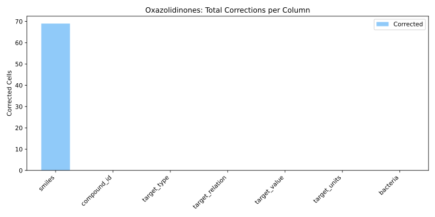

Oxazolidinone Antibiotics¶
Original Data¶
Title:
Oxazolidinone antibiotics
Description:
The dataset contains oxazolidinone antibiotics represented in SMILES format, along with their corresponding inhibitory concentrations (MIC or pMIC) against various bacterial strains. The data was extracted from scientific publications and includes detailed metadata about each measurement's origin, such as source (text, table, figure, or image) and exact location in the article (page, section, subsection).
Total number of records: 2923
Number of features (columns): 32
Data type: Mixed (text, numeric, chemical structures)
Application: Extraction of chemical structures and biological activity data for QSAR modeling and analysis of antibiotic effectiveness
Automatic validation: Yes
Data Scheme¶
Dataset – Column Descriptions¶
| Column Name | Description |
|---|---|
| smiles | Isomeric SMILES representation of the compound |
| Name of PDF file where data was extracted from | |
| doi | Digital Object Identifier of the source article |
| title | Title of the article |
| publisher | Journal publisher |
| year | Year of publication |
| access | Access status (1 = open, 0 = closed) |
| compound_id | Compound ID as used in the article |
| target_type | Type of measurement (e.g., MIC, pMIC) |
| target_relation | Inequality symbol (e.g., =, >, <) |
| target_value | Numerical target value |
| target_units | Units of target value (e.g., µg/mL, mol/L) |
| bacteria | Raw bacterial name |
| bacteria_name_unified | Normalized / unified bacterial name |
| bacteria_info | Additional strain/bacteria-related info |
| page_bacteria | Page number where bacteria is reported |
| origin_bacteria | Source of bacteria (text, table, fig, image) |
| section_bacteria | Section of article (if applicable) |
| subsection_bacteria | Subsection of article (if applicable) |
| page_target | Page of the article where target value is found |
| origin_target | Source of target value (table, text, image) |
| section_target | Section in the article for target (if text) |
| subsection_target | Subsection in the article for target |
| column_prop | Table column index or value (optional) |
| line_prop | Table row index or value (optional) |
| page_scaffold | Page with scaffold or full molecule |
| origin_scaffold | Origin of scaffold (table, figure, image) |
| section_scaffold | Section for scaffold |
| subsection_scaffold | Subsection for scaffold |
| page_residue | Page for substituent structures |
| origin_residue | Origin of residue structures |
| section_residue | Section of article for substituent structures |
Metadata¶
| Column Name | Description |
|---|---|
| doi | DOI of the source article |
| title | Title of the article |
| publisher | Publisher name |
| year | Year of publication |
| access | Open access status (1 = open, 0 = closed) |
| PDF file name of the article inside the archive |
Key Notes
- The dataset includes both full molecular structures and scaffold + substituent representations
- Target values are reported as MIC or pMIC, with associated units and inequality relations
- Metadata provides granular information about the source and location of the extracted data within scientific publications
Text Description¶
Task:
Extraction of chemical structures of antibiotics from the oxazolidinone class and their corresponding minimal inhibitory concentrations (MIC, target values) against various bacterial species.
Extracted Entities:
- SMILES molecules (column smiles, plus all columns containing scaffold and residue) – the molecule may be represented as a whole (metadata in scaffold columns) or as a scaffold with substituents (metadata in both scaffold and residue columns)
- Target values (all columns with the word target) – MIC or pMIC values measured for specific bacterial strains
- Bacteria (all columns with the word bacteria) – species for which the target value was measured
Metadata:
- Article information: doi, publisher, title, year, access
- Page: Page numbers in the article where data was extracted from
- Origin: Source type – table (with number), figure (with number), text, image (unnumbered figure)
- Section, Subsection: If the data is extracted from text or image, the section and subsection of the article are specified
Validation Results¶
The Oxazolidinones dataset showed high structural consistency,
requiring 69 corrections, all of which followed identifiable patterns.
No isolated errors were observed. Corrections were primarily localized to
smiles, compound_id, and target_type, and could be resolved through deterministic rules,
indicating a uniform and well-structured source dataset.
